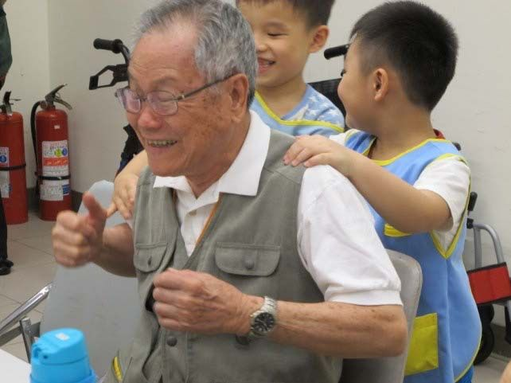
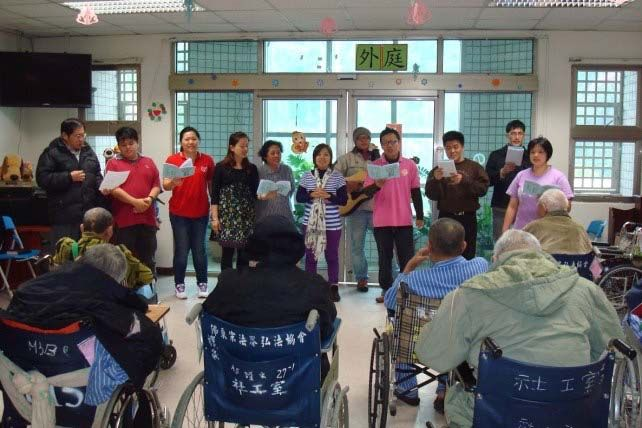
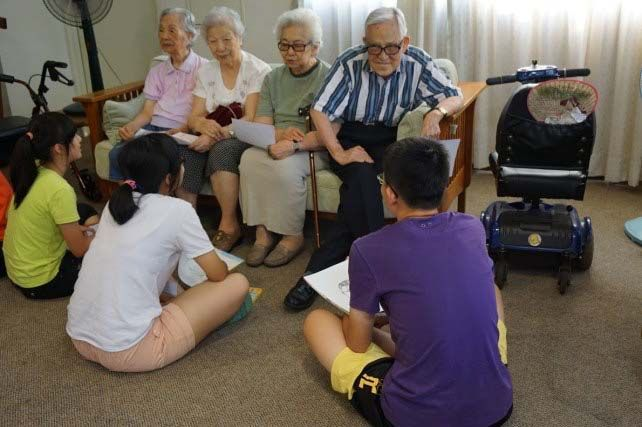

關於Robear
Robear，「人」如其名，擁有可愛小熊臉和白色身體的它，可是肩負著照護工作的照護機器人。Robear未來將在日本的居家及照護機構，擔任陪伴老人和協助看護人員的重要角色。
根據世界衛生組織(World Health Organization，WHO)報告指出，全球將在2050年擁有22%的人口超過60歲，人口老化是現在各國政府關注的議題，而日本人口老化的現象又比其他國家更為嚴重。
日本厚生勞動省估計，2013年的照護職員大約有171萬人，到了2025年後，將會需要253萬的人力。 社會對於照護的需求將越來越大，因此日本政府積極投入資金，開發多元的照護輔助裝置，以滿足照護的需要。而智慧型居家照護機器人，更是目前積極發展的項目。
他們希望能運用科技來協助照護人員，減輕繁重的工作負擔、提升照護品質，也可以緩解照護人力不足的問題。
這幾年來，日本開發機器人的技術不斷地精進，智慧型居家照護機器人的種類也愈來愈多元，還分為生活陪伴、家用服務、行動輔助載具、教育用、娛樂用等等。
可愛機器人Robear的誕生
研究機構理研 (Riken)在2011年時研發了一款名為「RIBA-II」的機器人，在2015年經過改良後，變成了高150公分，重約90公斤的照護機器人「Robear」。減輕重量後，讓Robear比起它的前身「RIBA-II」輕巧許多，而「瘦身後」的它，在支援照護者工作時，動作也變得更加順暢。
為了讓使用者舒適安心，Robear的表皮使用智慧橡膠感應器，柔軟的觸感類似人類的皮膚，還可以測量到壓力與形變，能快速感應到使用者身體的阻力；Robear的動作輕緩，讓被它「熊」抱的人感到安心。
Robear身上搭配六軸轉矩感測器、攝像機、麥克風，可承受80公斤的重量，將人從床上抬起，並移到輪椅上；還能夠幫助行動不便的人行走。它目前需透過平板電腦，或是手動操作來控制，充電一次可使用4小時。
理研 (Riken)希望這項技術，未來能夠實際應用在照護機器人上面，並表示若要近期商業化的話，設備將會簡化，考量成本價格將低於420 美元(約台幣14000元)。
試想，未來若有像Robear一樣的照護機器人能協助長者生活，對於因照護人力不足面臨的問題將有所緩解；溫暖又可愛的機器人，也能實際地減低長者與照護者的壓力，進一步提升雙方的生活品質。
身處於老化的社會之中，智慧型機器人因應社會照護的需要，不斷地被研發和改良，雖然目前的長者，未能立刻擁有智慧照護機器人的陪伴，但說不定在未來，我們家家戶戶都將會有一個照護機器人呢。
而它發展出的耐力與細心，也許會讓我們漸漸地不只把它當成機器，而是當成「人」在思考了。
▼這裡還有互動影片，看看Robear怎麼「熊抱」吧！
Robear 的功能和特色:
外型特色
- 身高150公分，擁有可愛小熊臉和白色身體的，在雙手手臂還有柔軟的靠枕，最大的特色可以公主抱，可以承載最大重量80公斤
- Robear 的雙手耐重可達80公斤，可以應付大部分患者的體重
- 可以透過手動操作或使用Android平板電腦控制
主要功能
- 居家照護
- 陪伴老人
- 協助看護人